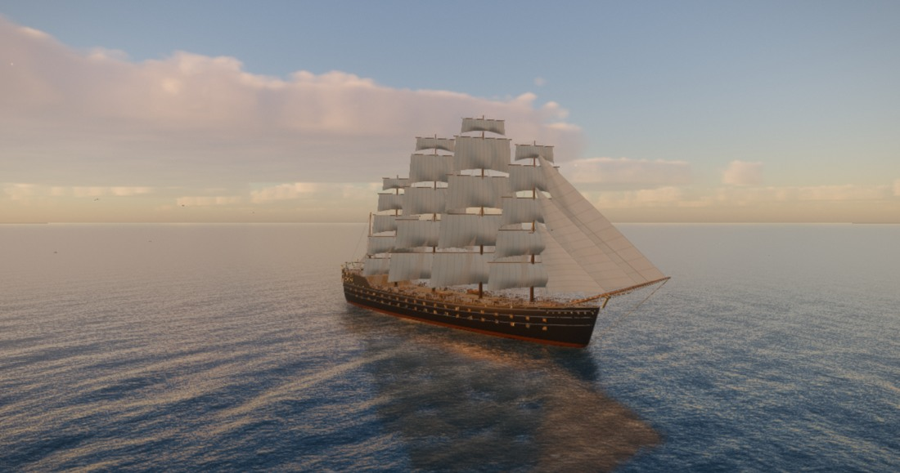

↗ OPEN INTERACTIVE DEMOOpen Sea
A real-time WebGL 2 ocean with five spectral wave cascades and a detailed 52 m, three-masted schooner. Sail from glassy calm into a storm, through sunset, moonlight, rain and lightning, then dive into blue water with light shafts and independently swimming fish. A slow cinematic tour hands over to free flight, with a visible fullscreen control.
- Sea states from glassy calm to storm
- Sunrise to moonlit night, clouds that shadow the water
- Rain, lightning and a detailed schooner with a wake
- Underwater view with light shafts and fish
WebGL 2 · Best on a desktop GPU · Drag or use movement keys to take over · H hides the controls
FFT ocean · 5 wave cascadesBlender-built 52 m schoonerCinematic tour · Free flight · Fullscreen